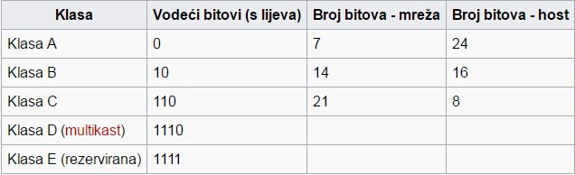

IPv4
Ne možemo pričati o novoj IPv6 verziji a da ne spomenemo njenog predhodnika IPv4.
IP protokol verzija 4, kraće IPv4, najrašireniji je IP protokol na najvećoj računaloj mreži danas - Internetu. Pojedine verzije IP protokola razlikuju se po načinu adresiranja, izgledu zaglavlja paketa, ali i brojnim drugim detaljima. Najvažnija karakteristika IPv4 protokola je da koristi 32-bitnu IP adresu, što znači da je propisana duljina svake IP adrese u ovoj verziji protokola 32 bita.
Iskorištenje IPv4 adresnog prostora
S obzirom da je IP adresa u ovoj verziji IP protokola propisane duljine od 32 bita, lako je izračunati da je maksimalni broj različitih adresa 232, ili približno 4,3x109 odnosno 4,3 milijardi adresa. Iako se taj broj čini prilično velikim, širenje Interneta i rast potrebe za novim IP adresama doveli su do toga da je taj adresni prostor postao daleko premali za sve potrebe. Naime, nije daleko dan kada bi svaka osoba u svijetu trebala imati svoje osobno računalo koje treba javnu IP adresu, brojni su poslužitelji koji za svoj rad također trebaju IP adrese itd. Nadalje, otvara se cijelo novo područje mobilne telefonije koje će se vrlo skoro integrirati s Internetom, a razvija se i područje različitih drugih uređaja (kućanski aparati, razni uređaji u industriji, prometu, turizmu...) koji će se također vrlo skoro koristiti ili se već koriste Internetom za razmjenu i prikupljanje informacija, komunikaciju, upravljanje na daljinu i sl. Stoga su predložena različita rješenja, od različitih metoda adresnih translacija kao što je NAT, pa do potpuno nove verzije IP protokola koja bi imala veći raspon raspoloživih adresa, kao što je IPv6.
IPv4 Adrese:
IPv4 adresa je u osnovi 32-bitni binarni broj. Kako je u pravilu vrlo teško pamtiti niz od 32 znaka '0' ili '1', češće se koriste druge notacije, a najčešće od svih decimalna notacija. Decimalnu notaciju se od 32-bitnog binarnog broja dobije na sljedeći način: 32-bitni broj se odvoji u četiri 8-bitne grupe, svaka grupa se zapiše u dekadskom obliku, te zatim u zapisu prikažu odvojene točkama.
Ovisno o tome kojim binarnim znamenkama započinje 'vodeća' grupa bitova (prva s lijeva)
IP adrese se dijele u tzv. KLASE IP ADRESA prema tablici:
